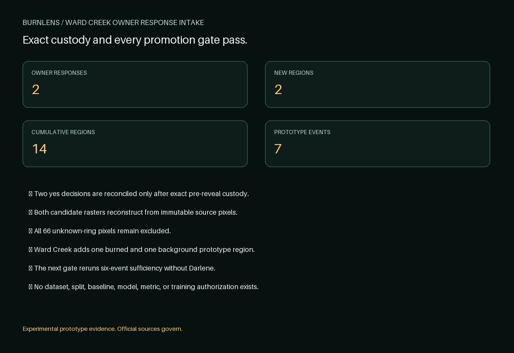

Experimental owner-approved prototype regions, not ground truth, a dataset, official wildfire information, emergency guidance, or field validation. Official sources govern.
Aggregate result
Owner decisions: 2 yes / 0 no / 0 uncertain. Ward Creek adds one burned and one background prototype region only because every non-owner gate also passes.
The exact source pixels, proposal routes, candidate rasters, native grid, uncertainty rings, terms, and event identity reconstruct. Notes and unit decisions remain private.

Sources and roles
- Contains modified Copernicus Sentinel data 2019, accessed through CDSE.
- MTBS is analyst-interpreted remotely sensed reference evidence from USGS and USDA Forest Service, not field truth.
- The affirmative-background route is specific to the exact paired optical window and conservative MTBS exclusion.
What happens next
The seven-event prototype pool is not a dataset. U08 must construct the exact six-event candidate that excludes Darlene and rerun every sufficiency gate before any dataset, split, baseline, or training step.
Decision
ACCEPT_WARD_CREEK_AS_SEVENTH_OWNER_APPROVED_PROTOTYPE_EVENT_AUTHORIZE_SIX_EVENT_SUFFICIENCY_RERUN
BurnLens 0.50.0 · label set owner-approved-prototype-region-labels-v0.5.0 · schema burn-scar-binary-region-label-schema-v0.3.0 · run BL-2026-07-25-ward-creek-owner-response-intake-r002 · source a7f599ce650975a92dc2c712e10d6ca4ce947627.